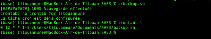
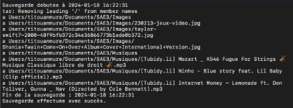
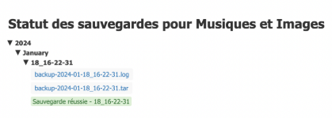
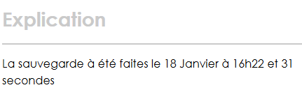

Script shell automatisant la sauvegarde de répertoires, avec génération de logs horodatés, rapport HTML et planification via crontab — une approche DevOps et cybersécurité dès la 1ère année.
Ce script shell a pour objectif d'automatiser la sauvegarde des répertoires "Images" et "Musiques". Après avoir défini les chemins et vérifié leur existence, il crée une structure de sauvegarde organisée par date — année, mois, jour et heure.
Il utilise la commande tar pour créer une archive des répertoires, enregistre les résultats dans un fichier de log horodaté et génère un rapport HTML via un script secondaire. En cas de succès ou d'échec, des messages appropriés sont affichés et tracés.
Enfin, le script configure automatiquement une tâche cron pour exécuter la sauvegarde quotidiennement à midi en semaine — en vérifiant d'abord si la tâche existe déjà pour éviter les doublons. J'ai dû consulter la documentation sur crontab, illustrant ma démarche d'apprentissage autonome.

Le script s'exécute, effectue la sauvegarde et confirme que la tâche cron est déjà configurée. La commande crontab -l affiche la planification active.

Chaque sauvegarde génère un fichier de log complet : liste des fichiers traités, horodatage précis, statut de succès ou d'erreur. Traçabilité totale des opérations.

Un second script génère automatiquement un fichier HTML affichant l'arborescence des sauvegardes avec leur statut — une interface lisible pour suivre l'historique.

Le rapport affiche clairement la date et l'heure exacte de chaque sauvegarde réussie — ici le 18 janvier à 16h22 et 31 secondes — pour une traçabilité sans ambiguïté.
Un script de backup bien conçu est un élément fondamental de toute politique de sécurité informatique.
Toute stratégie de sauvegarde sérieuse suit la règle 3-2-1 : 3 copies des données, sur 2 supports différents, dont 1 hors site. Ce script pose les bases d'une telle démarche.
En cybersécurité, la traçabilité est essentielle. Chaque opération est enregistrée dans un log horodaté permettant de savoir exactement quand, quoi et comment une sauvegarde a été effectuée.
L'erreur humaine est la première cause de perte de données. En automatisant via crontab, on élimine le risque d'oubli et garantit une sauvegarde régulière et fiable.
En cas d'attaque par ransomware chiffrant les fichiers, disposer de sauvegardes récentes et isolées permet de restaurer les données sans payer de rançon.
Un rm -rf malencontreux, une corruption de disque ou une erreur humaine peuvent détruire des données critiques. La sauvegarde automatique est le filet de sécurité indispensable.
Le script vérifie systématiquement l'existence des répertoires et de la tâche cron avant d'agir — principe de validation préalable qui évite les erreurs silencieuses.